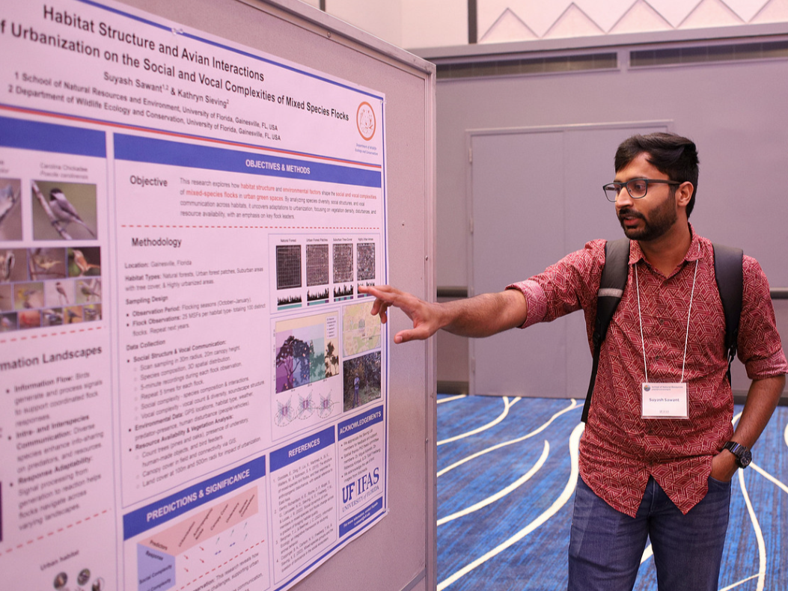
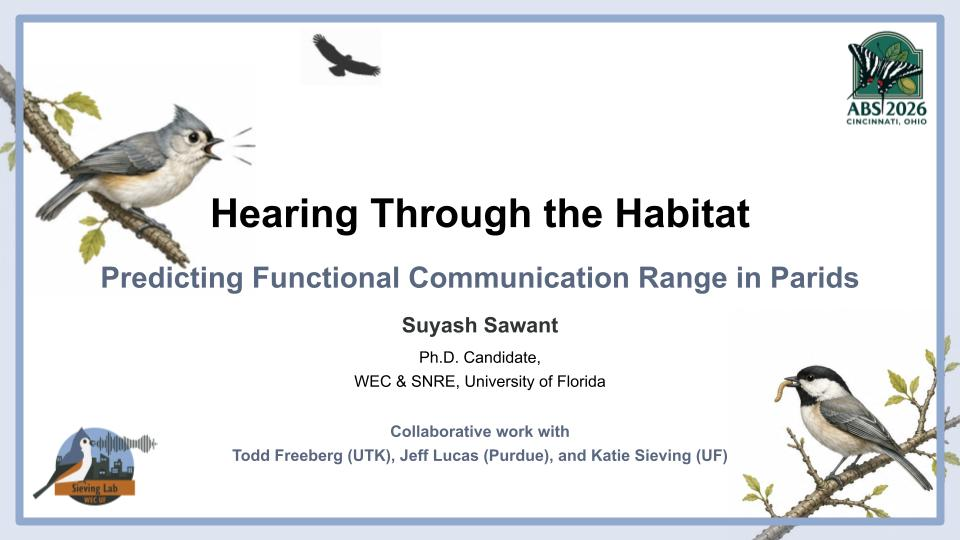
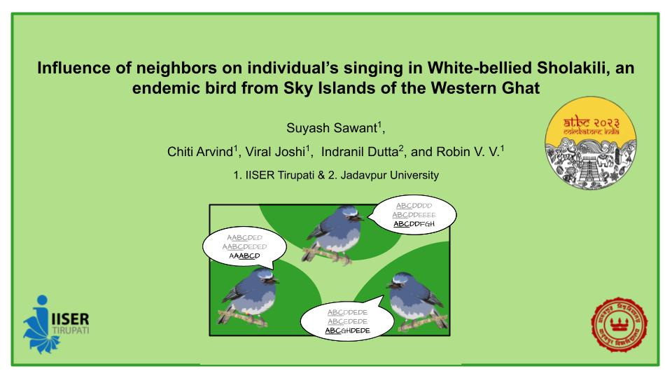
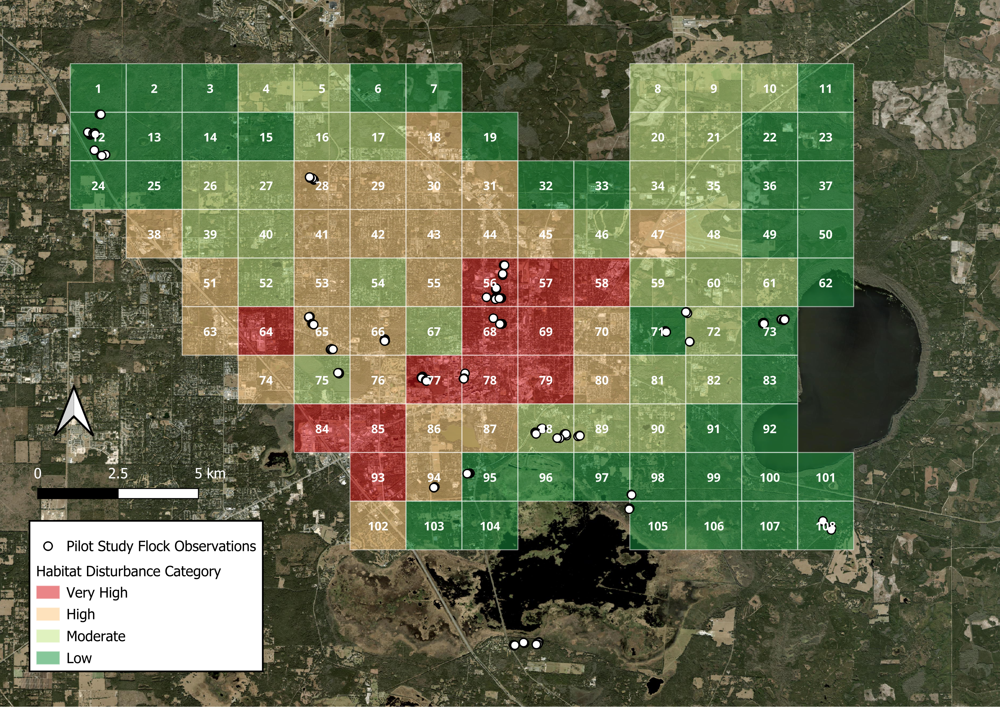
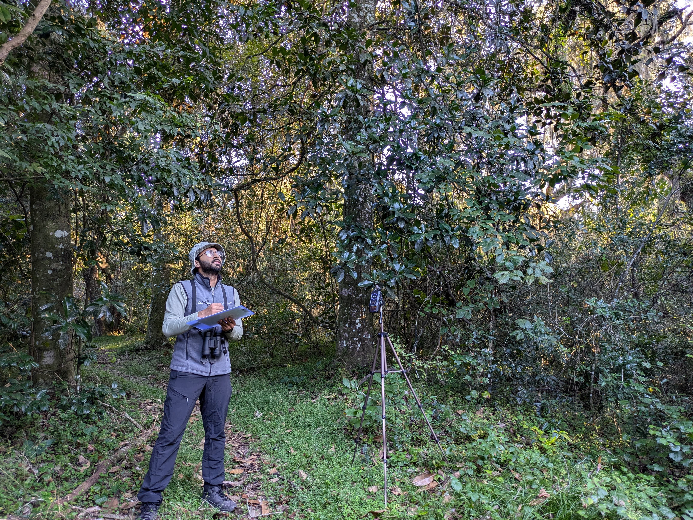
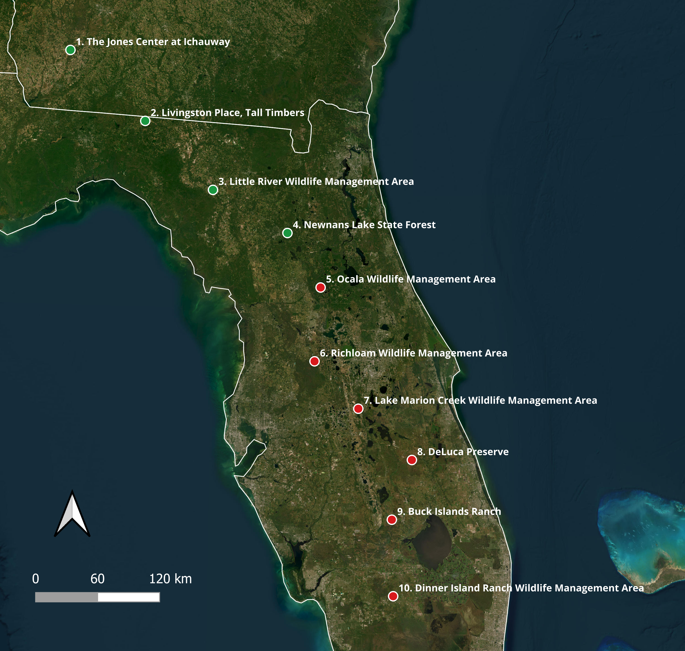

Research
Avian Vocal Complexity: Structural and Functional Dimensions
Avian vocal complexity has been a long-term interest of mine, beginning with efforts to develop quantitative approaches to describe and compare the complexity of birdsong. Over time, this has expanded into a broader interest in both the structural and functional dimensions of vocal complexity: how complex a vocal signal is, what that complexity means for communication, and how it may arise from the different information that signals encode and convey.
My earlier work focused on developing and refining two quantitative measures of structural song complexity: the Song Richness Index (SRI) and Note Variability Index (NVI). I am currently expanding this work by synthesizing the past five decades of research on avian vocal complexity. We are examining how “vocal complexity” has been conceptualized and quantified across the literature and identifying important gaps and future directions.

Mechanistic Models of Sound Transmission and Functional Communication Ranges
Animal communication depends on both the production of a signal and what happens to that signal as it travels through the environment. I am interested in understanding how far vocal information can functionally travel in natural environments and what determines that distance. Rather than treating communication range as a fixed property of a species or vocalization, I approach it as the outcome of interactions among signal amplitude and frequency, transmission distance, vegetation structure, atmospheric conditions, background noise, and the perceptual abilities of receivers.
My current work uses controlled playback experiments and mechanistic models of sound transmission to quantify these processes in the vocalizations of Tufted Titmice and Carolina Chickadees. By separating different sources of signal attenuation and degradation, we are developing a framework that links sound production at the source to the acoustic characteristics of signals after propagation through natural environments. The longer-term goal is to integrate these predictions with receiver perception to estimate functional communication ranges across vocalizations, species, habitats, and environmental conditions.

Cultural Evolution of Vocal Signals: Complex Songs of the White-bellied Sholakili
Many bird vocalizations are learned rather than entirely innate, allowing vocal traditions to be shared, maintained, and modified through social interactions and across generations. I am interested in how these processes shape complex vocal repertoires across multiple spatial and temporal scales: how song elements are shared among individuals within populations, how vocal traditions diverge among populations, how individual repertoires change through time, and how song elements are transmitted both horizontally among individuals and vertically across generations. The White-bellied Sholakili (Sholicola albiventris), an endemic songbird of the montane forests of the Western Ghats, provides a particularly interesting system for exploring these questions because of its highly complex and individually variable songs.
Using multi-year recordings from individually identified birds and populations across their geographic range, we are examining vocal variation at multiple levels of organization, from individual note types to longer sequences of notes. Our work explores the rules governing song sharing among individuals, the persistence and turnover of vocal elements through time, and the emergence of population-level vocal traditions and dialects.

Anthropogenic Disturbance and the Social Dynamics of Mixed-Species Flocks
Animals rarely respond to environmental change as isolated individuals. Changes to habitats can also alter the social interactions through which animals find resources, avoid predators, and acquire information. I study this process using mixed-species bird flocks, dynamic social communities in which multiple species travel and forage together while exchanging information. These flocks provide an opportunity to ask how anthropogenic disturbance reshapes which species occur in a community, who interacts with whom, and how those interactions change through time.
My current work follows mixed-species flocks across natural, suburban, and urban landscapes in north-central Florida. Through repeated field observations, dynamic occupancy models, and social network analyses, we are examining how flock membership, persistence, species associations, and network structure respond to habitat characteristics and anthropogenic disturbances at multiple spatial scales. This work aims to move beyond conventional measures of species richness and abundance to understand how environmental change can reorganize the social structure of these dynamic communities.

Vocal Communication ↔ Social Dynamics: Parids as Informers and Facilitators in Mixed-Species Flocks
Communication and social structure can influence one another in both directions. Social relationships determine who has access to whose information, while vocal communication can help create and maintain those relationships. I am particularly interested in this feedback within mixed-species bird flocks, where species like Tufted Titmice, Carolina Chickadees, and White-breasted Nuthatches can act as important sources of social information. Their vocalizations may facilitate flock formation and cohesion while providing other species with information about predators, resources, and the behavior of nearby individuals.
This project examines how the roles of these informers and facilitators change across species, social contexts, and environmental conditions. We are combining field observations, passive acoustic monitoring, and measurements of vocal behavior to connect patterns of vocal communication with flock participation and social associations. A major goal is to understand whether changes in social structure alter how information is produced and exchanged and, conversely, whether changes in communication help explain the formation, persistence, and breakdown of mixed-species associations.

Passive Acoustic Monitoring of Mixed-Species Flocks Across a Latitudinal Gradient
The identity and diversity of species that facilitate mixed-species flocks change dramatically across the southeastern United States. Moving from north to south, these communities transition from systems with three major flock leaders and information providers, to two, to one, and eventually to a system without any traditional leaders. This natural geographic transition provides an opportunity to ask what happens to a social system as the species that organize and facilitate information exchange are progressively lost.
We are building a passive acoustic monitoring network across this latitudinal gradient, using autonomous recording units to track flock-associated species and their vocal activity across space and time. Initial sampling spans sites from southwestern Georgia through Florida, with ongoing expansion farther south to capture the complete transition in flock leadership. By comparing species co-occurrence and vocal activity across this gradient, we aim to understand how the organization and information dynamics of mixed-species flocks change as the diversity of their traditional leaders declines.

Other Projects
Function-Specific Vocal Libraries: Time × Frequency × Amplitude
Ongoing
Modeling Dynamic Interactions in Mixed-Species Flocks
Ongoing
Bird Feeders and the Structure of Mixed-Species Flocks
Ongoing